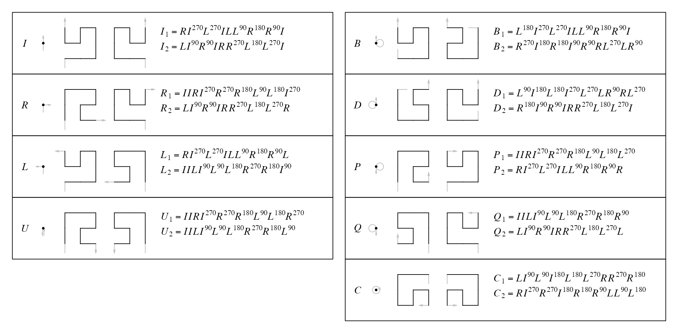
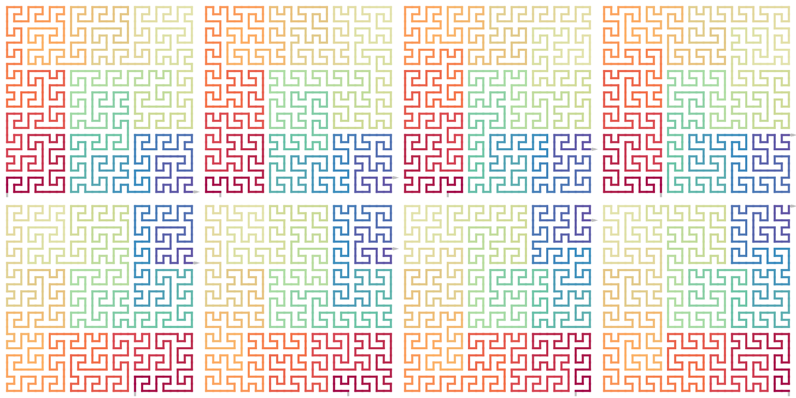
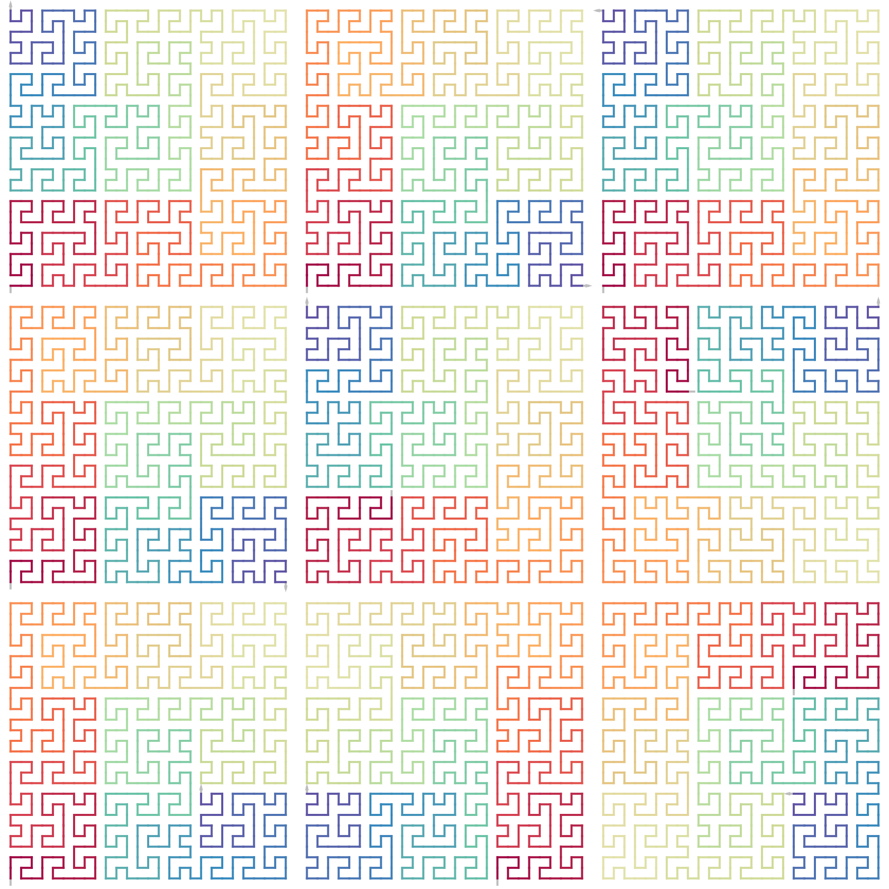
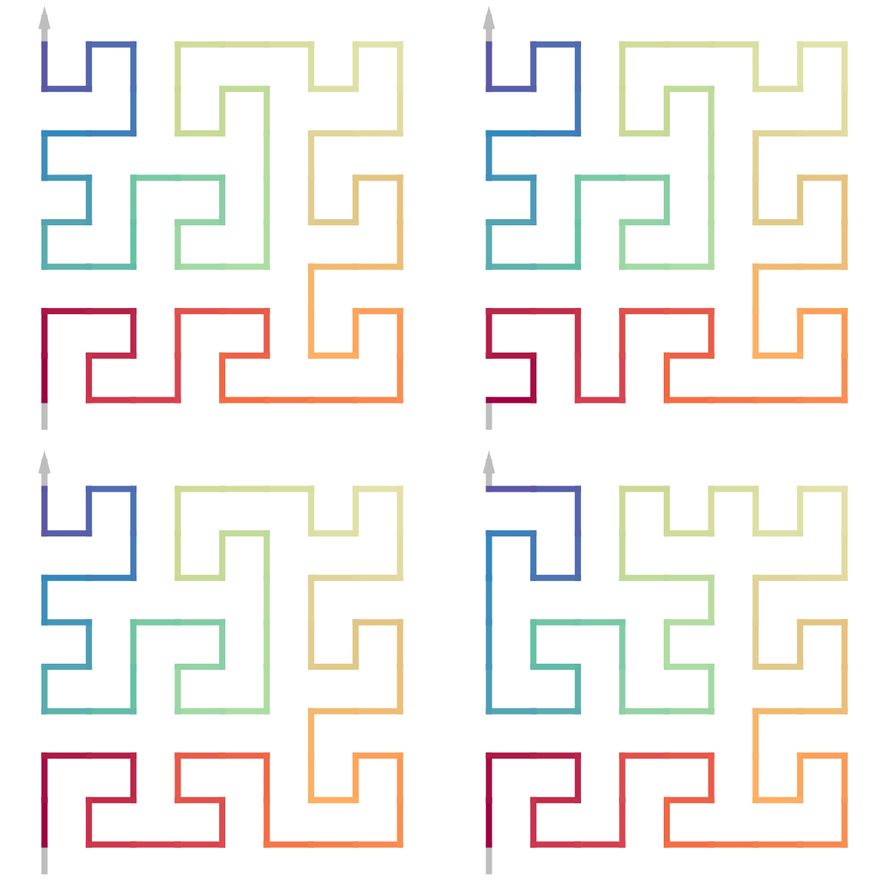

vignettes/meander_curve.Rmd
meander_curve.RmdThe Meander curve has a different set of base patterns.

The expansions are very similar as the Hilbert curve, but it also has a flipped version where the units can be flipped horizontally or vertically on various levels.
draw_rules_meander(flip = TRUE)All possible forms of the Meander curve on level 3 taking R(0) as the seed:
draw_multiple_curves(
sfc_meander("R", code = "111"),
sfc_meander("R", code = "112"),
sfc_meander("R", code = "121"),
sfc_meander("R", code = "122"),
sfc_meander("R", code = "211"),
sfc_meander("R", code = "212"),
sfc_meander("R", code = "221"),
sfc_meander("R", code = "222"),
nrow = 2, lwd = 2)The curves on level 3 taking the nine base patterns separately.
draw_multiple_curves(
sfc_meander("I", code = "111"),
sfc_meander("R", code = "111"),
sfc_meander("L", code = "111"),
sfc_meander("U", code = "111"),
sfc_meander("B", code = "111"),
sfc_meander("D", code = "111"),
sfc_meander("P", code = "111"),
sfc_meander("Q", code = "111"),
sfc_meander("D", code = "111"),
nrow = 3, lwd = 2)
Flipping (horizotal or vertical) can be applied by specifying the index of the hierarchical unit on the curve.
p = sfc_meander("I", 11)
draw_multiple_curves(
p,
sfc_flip_unit(p, "1"), # bottom left
sfc_flip_unit(p, "2"), # bottom middle
sfc_flip_unit(p, c("6", "7", "8", "9")), # top left, four units
nrow = 2
)
The total number of different forms of the Meander curve on level \(k\) is composed by two parts: \(9 \cdot 4 \cdot 2^k\) is the number by applying the expanding rules, and \(2^{\frac{9^k - 1}{8}}\) is the number of units on all levels where each unit can be flipped independently.
\[ 9 \cdot 4 \cdot 2^k \cdot 2^{\frac{9^k - 1}{8}} \]
seed = sfc_sequence("IILILILI", rot = -90, universe = sfc_universe(SFC_RULES_MEANDER))
plot(seed, grid = TRUE)
sfc_meander(seed, code = "111") |> plot(lwd = 2)